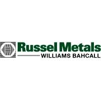
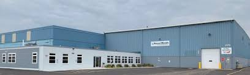
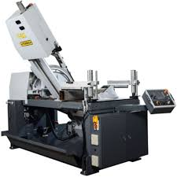
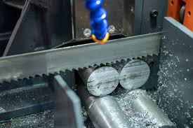

Industrial Steel Fabrication
Russel Metals Williams Bahcall
Milwaukee, Wisconsin




Summary
I began working at Russel Metals in August of 2012. I was employed
with Russel for eleven years. During that time, I held three separate
positions in their workshop. I started as a parts cleaner, but after three
months I was promoted to be an overhead Crane Operator. After almost two
years, I took the position of Saw and Punch Operator. In October of 2023,
I was designated as Senior Saw Operator.
Unfortunately, due to unforseen health complications, I was forced to resign
my position at Russel Metals in January 2024.
Responsibilities
- Daily inspection of department's equipment and area cranes according to
company regulations.
- Gathering and assembling material into necessary bundles needed
for cutting steel to sizes according to customer order specifications.
- In-process inspection of finished parts, to ensure accurate cutting lengths, sqaureness,
and quality control.
- Final packaging, wrapping, and banding of cut materials onto wooden skids, for safe shipping
to the customer.
- Proper completion and documentation of all order tickets and related paperwork.
- Routine daily housekeeping and cleaning of department, including floors, surfaces,
equipment, and proper disposal of scrap metal and cutting chips.
- Necessary light maintenance, such as blade changing, refilling of coolant and hydraulic oil,
greasing of hydraulic bearings, and troubleshooting any possibly needed repairs.
Relevant Skills
- Time Management
- Meticulous Attention to Detail and Organization
- Ability to Multi-task
- Aptitude in Mathematics
Contact Information
Russel Metals Williams Bahcall
999 West Armour Avenue
Milwaukee, WI 53221
(414) 481-7100
Back